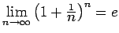

| A ist Grenzwert der Folge (xn). Man schreibt auch für |
|
| z.B.: | |
| B ist Grenzwert der Funktion f(x), wenn x gegen a strebt | |
| f=o(g) für |
LANDAU-Symbol ,,klein o`` bedeutet: für |
| f=O(g) für |
LANDAU-Symbol ,,groß O`` bedeutet: |
| für |
|
| Summe, in der i (der Laufindex) von 1 bis n läuft | |
| , | Produkt, in dem i (der Laufindex) von 1 bis n läuft |
| f( ), | Bezeichnung einer Funktion, z.B.: |